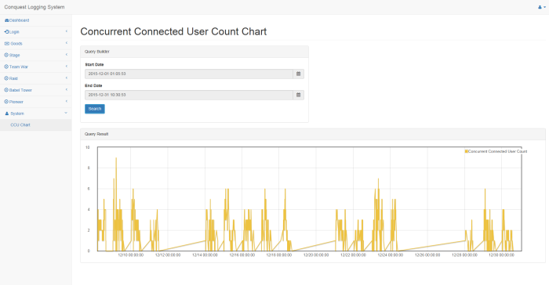
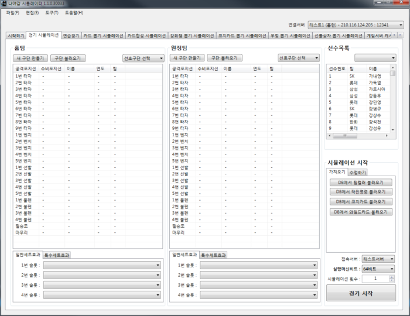

KIM DONGBUM
Game Server Developer
- Game Server - C++
- Database - MSSQL / MySQL
- Windows & Linux Platform
- Web Based Server & Tools - JSP / ASP.net
- 2007년부터 개발을 시작하였으며 게임서버 개발자로 일하고 있습니다.
- 여러 프로젝트에서 게임서버와 인프라 소프트웨어를 개발하였으며 현재는 Linux, Python, AWS, Node.js 등의 기술에 관심을 가지고 있습니다.
- DragonFly :: 2016. 04. ~ Today
- RocketMobile :: 2015. 04. ~ 2016. 04.
- WEMADE Entertainment :: 2014. 02. ~ 2015. 03.
- ENTAZ :: 2012. 10. ~ 2014. 02.
- PandoraTV :: 2010. 05. ~ 2012. 02.
- eFusion-i :: 2008. 12. ~ 2010. 02.
- Cube&Cube :: 2007. 02. ~ 2008. 12.
Project
Project 'ID'
-
In-game Play
- 모바일 FPS 게임 제작 프로젝트
- 게임서버 개발 : 프로젝트 시작시부터 참여하여 프로토타입 개발 전반 담당
- 게임서버 개발, DB테이블/프로시져 개발
- 3:3 멀티플레이어간 게임처리, 로그인, 캐릭터, 인벤토리, 총기아이템 구현
- C++, MySQL
- Linux 서버 사용
Project '정복'
-
Lobby
-
In-game Play
- 게임서버 개발 : 프로젝트 시작시부터 참여하여 비즈니스 로직 개발 전반적으로 담당
- 로그인처리, 캐릭터, 아이템, 강화/초월/합성/진화, 개척, 모험 진행, 상점 기본기능 구현, 게임서버 개발, DB테이블/프로시져 개발
- C++, MSSQL
- Windows 서버 사용
- 로깅서버 개발 (JSP, MySQL)
- 게임서버 - 로그데이터수집서버 - 로그서버 간 HTTP 통신 구현
- 기타 서버시스템 구현 : 레이드 플레이기록 저장서버, 로그 뷰어 시스템 등 구현
- 테스트/QA 서버 관리 (VMWare ESXi로 가상화), SVN 서버, 백업 서버 등 개발서버 관리
- Redmine 설치/설정 등의 개발인프라 지원
-
LogViewer
 - 리눅스 환경(CentOS 6.7)에서 제작
- JSP + JAVA로 구현
- Apache + Tomcat 사용
- 데이터베이스는 MySQL 사용 (JDBC를 통해 연결)
- 기본적인 로그뷰어 기능, 동시접속자수 확인 기능 구현
{kind=link}
{kind=link}
{kind=link}
{kind=link}
{kind=link}
{kind=link}
{kind=link}
{kind=link}
{kind=link}
{kind=link}
Project '드래곤헌터 for kakao'
-
Main Promotion
-
CBT Promotion
- ‘드래곤헌터’ 서버 개발 : 프로젝트 초기부터 작업하여 런칭, 서비스 운영까지 참여
- C++/MSSQL로 작업 (Windows 플랫폼)
- 스테이지, 강화/초월, 미션처리, PVP, 무한의숲 등 비즈니스 로직 개발
- 사내 공용플랫폼 시스템과의 연동작업(아이템전송, 이벤트연동, 로깅)
- 운영툴 제작 (ASP.NET, MySQL)
- 유저 데이터 조회, 랭킹 조회, 아이템, 스테이지 조회 등 운영툴의 모든 기본기능을 구현
- 아이템 발송 기능, 유저 데이터 수정 등 데이터 입력/수정 기능을 구현
- 실제 서비스 이후 유지보수 및 추가개발 작업 담당
- SVN 서버 관리, 테스트서버 설치/유지관리와 서버설정 등의 개발인프라 관리 담당
Project '나는 야구감독이다'
-
Game Play
-
TV Promotion
- ‘나는 야구감독이다’ 서비스의 운영 및 유지보수 업무를 담당
- C++, MSSQL 사용 (Linux 플랫폼)
- 카드 컨텐츠 추가, 데이터 테이블 관리 등을 담당
- 서버점검/오류대응 등의 일반적인 유지보수 작업과 서비스 관리 담당
- ‘나는 야구감독이다 for kakao’ 서비스를 위한 추가 개발 담당
- 카카오톡 연동을 위한 친구정보관리 캐시서버를 구현
- 친구초대와 선물 기능 등을 구현
-
Admin Tool
 - 게임운영을 위한 툴 개발 (C# + Winform으로 구현)
- 서버점검 시작/종료, 서버점검 메시지 설정, 서버점검 예약 기능 구현, 야구 경기 시뮬레이션 기능 등을 구현
- 선수카드뽑기, 아이템뽑기 등 각종 뽑기 기능 시뮬레이션 기능을 구현
- 프로토콜 부하를 분석하기 위한 툴을 JSP와 MySQL로 개발
{kind=link}
{kind=link}
{kind=link}
{kind=link}
Contact
- 010-9479-9193
- dongbum9@gmail.com